How to repair plastic parts

-
During operation, please take safety protection measures as required. For details of safety protection, please refer to Sheet metal protection
-
Before operation, please carefully read and observe site safety and vehicle protection. For details, please refer to Site safety and vehicle protection

This document introduces how to repair plastic parts with the repair of bumper as an example.
Repair tools and auxiliary materials
You can learn about the tools and auxiliary materials required for repair of outer panels by clicking on the following link.
-
Repair tools: Repair tool of plastic parts
-
Auxiliary materials: Repairing plastic parts
Operation method
-
Evaluate the damaged area:
-
Visual confirmation: Visually confirm the damaged part and damage scope by observing reflected light from fluorescent lamps or light sources, and evaluate the size and degree of damage.
-
Touch confirmation: Touch to understand the dents and bulges on the surface more comprehensively.
-
Mark the confirmed damage scope with a marker.
-
-
Crack treatment: Use a 4mm-diameter drill bit to drill holes at the end of the fracture to prevent further expansion.
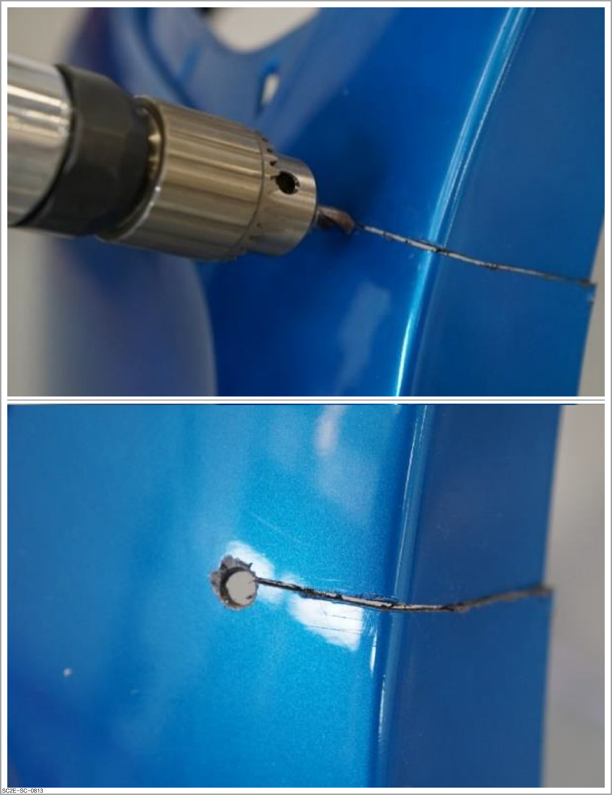
-
Making of feather edges: Trim the step difference between the exposed surface and the old coating, so as to prepare for applying plastic poly-putty. The operation steps are as follows:
CautionAfter grinding, the feather edges shall be smooth. Otherwise, poly-putty marks will form after spraying of top coat.
-
Install sandpaper #P120-P180 on the grinder.
-
Grind the damaged area, and avoid surface deformation of plastic parts during grinding.
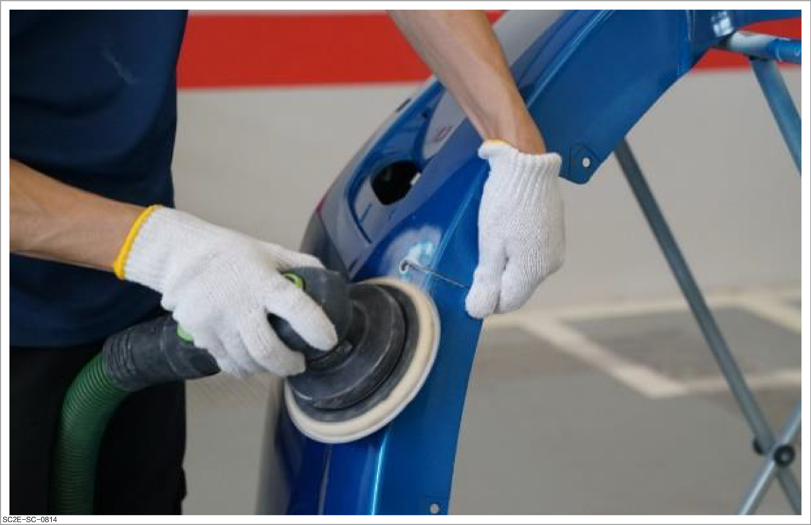
-
Blow dust with the air gun and confirm that there is no crack, except for the cracked area.
-
Use sandpaper #P240 to grind the damaged area, and ensure that the feather edge shall exceed the edge of the damaged area by 20 mm during grinding.
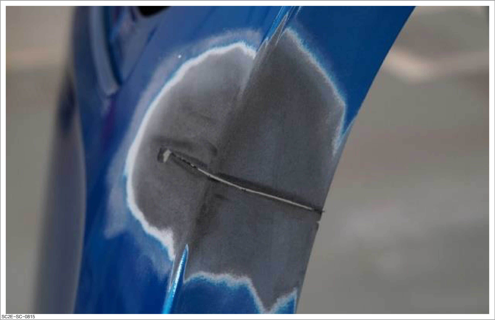
-
Grind the inner side of the bumper with a belt grinder to ensure good adhesion during adhesive application.
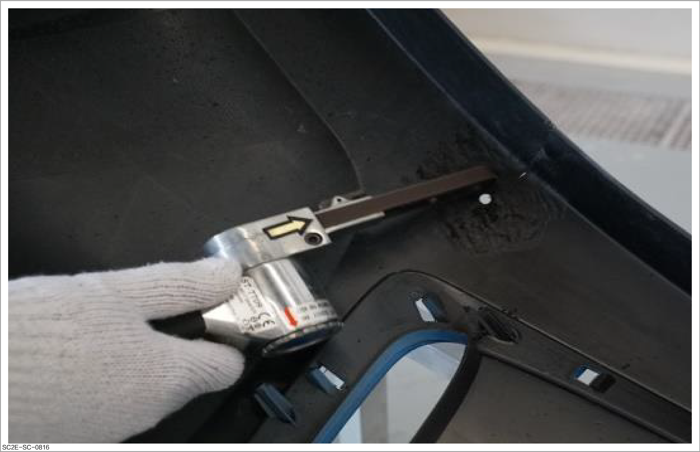
-
-
Panel cleaning: After preliminary treatment of the plastic surface with an air gun, degrease the surface with detergent and cleaning cloth to ensure that the cleaned surface is free from dirt, oil stains and dust.
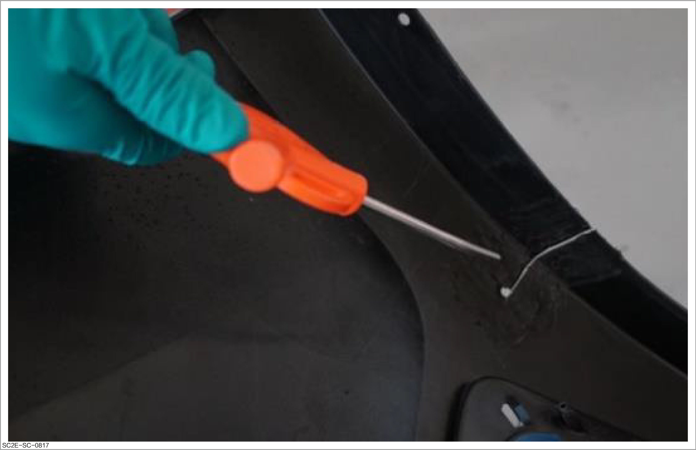
-
Application of plastic primer: Apply a thin layer of plastic primer evenly to the surface of the ground exposed area to ensure good adhesion of the adhesive to be applied later.
Caution-
Due to the softness of the resin bumper, a special plastic primer is required.
-
Do not apply the plastic primer too thickly in one time as this will cause the paint to peel or shrink around the feather edge.
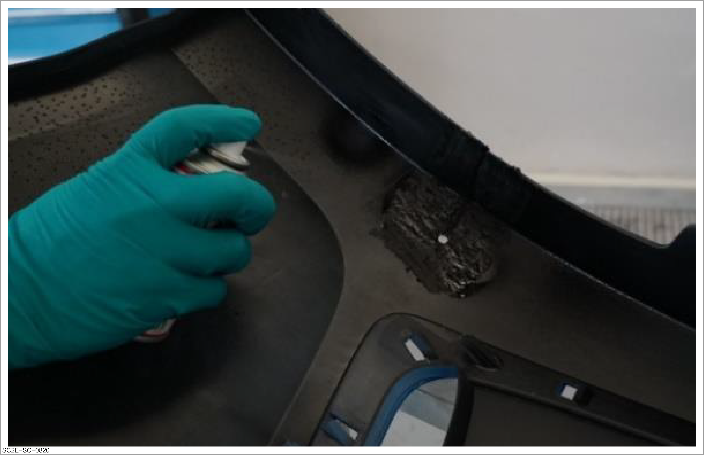
-
-
Application of plastic adhesive: Mix the required amount of adhesive according to the instructions in the product manual and apply it evenly on the ground area.
CautionDuring application, fix a piece of auxiliary material (such as thin iron panel) on the outer side of the cracking part to eliminate the height difference caused by bumper fracture.
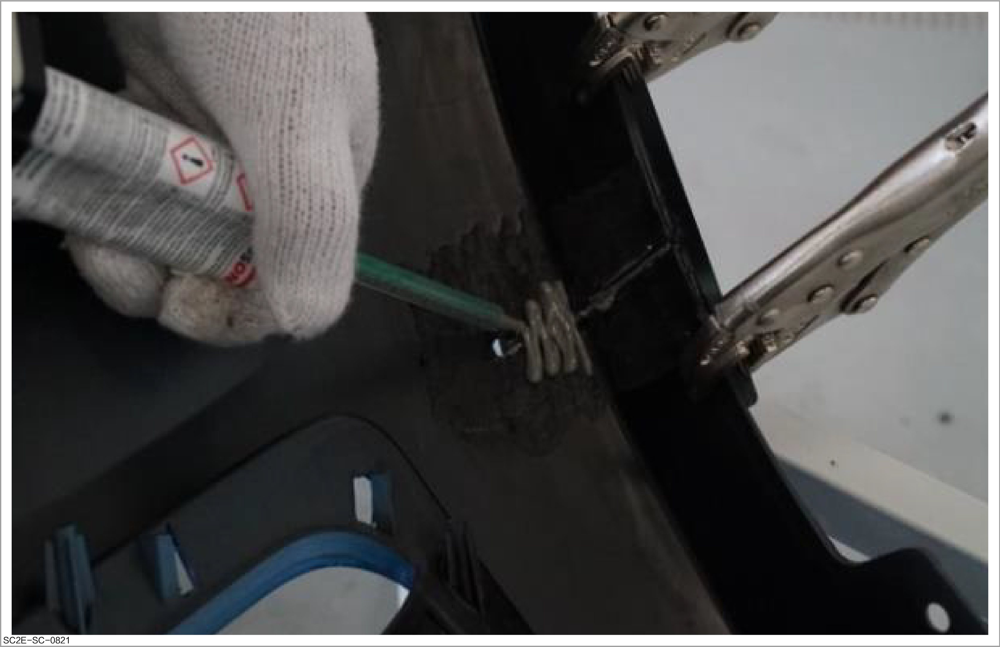
-
Reinforcement of the damaged part with reinforced fiber cloth: Paste reinforced fiber cloth to the back of the bumper after applying adhesive to ensure the strength of the repaired panel. During pasting, apply pressure with a scraper to ensure that the fiber cloth is attached to the adhesive.
ReminderThis step can be ignored if the damaged plastic part is not cracked.
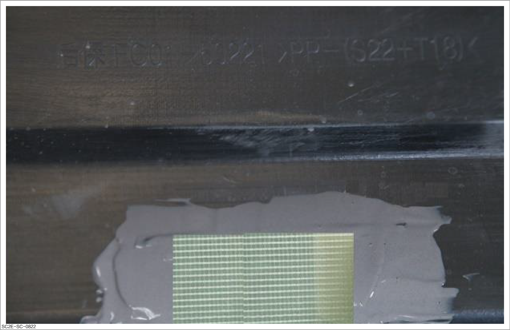
-
Application of resin adhesive:
-
Continue to apply adhesive on the surface of the reinforced fiber cloth until it covers the entire surface.
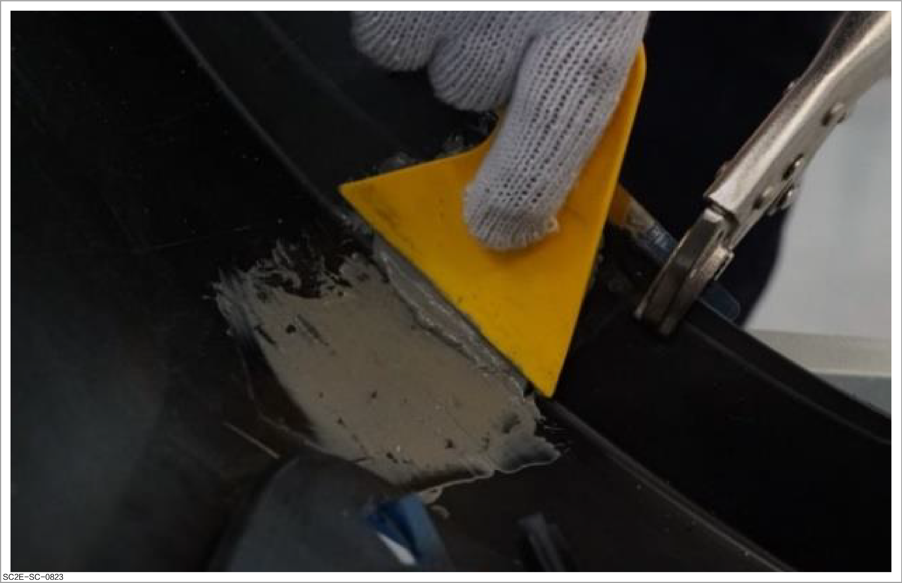
-
Use an infrared lamp to heat the applied area at 50°C for forced drying.
-
After drying and cooling, remove the auxiliary steel panels and tools.
-
Continue to apply the adhesive and forcibly dry it.
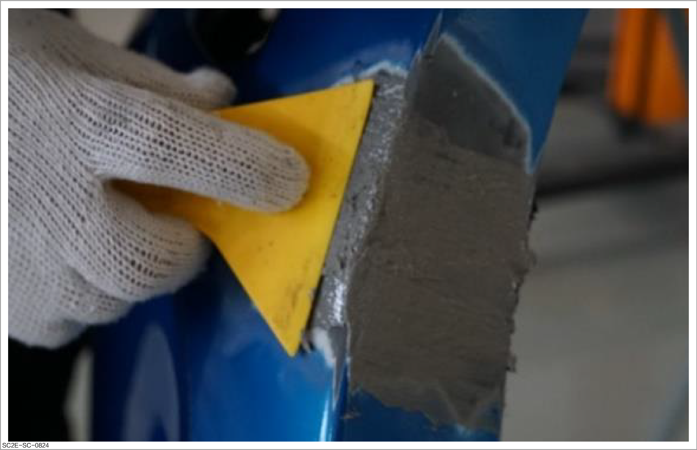
-
After drying, grind with a double-action grinder to roughly trim the panels in damaged areas.
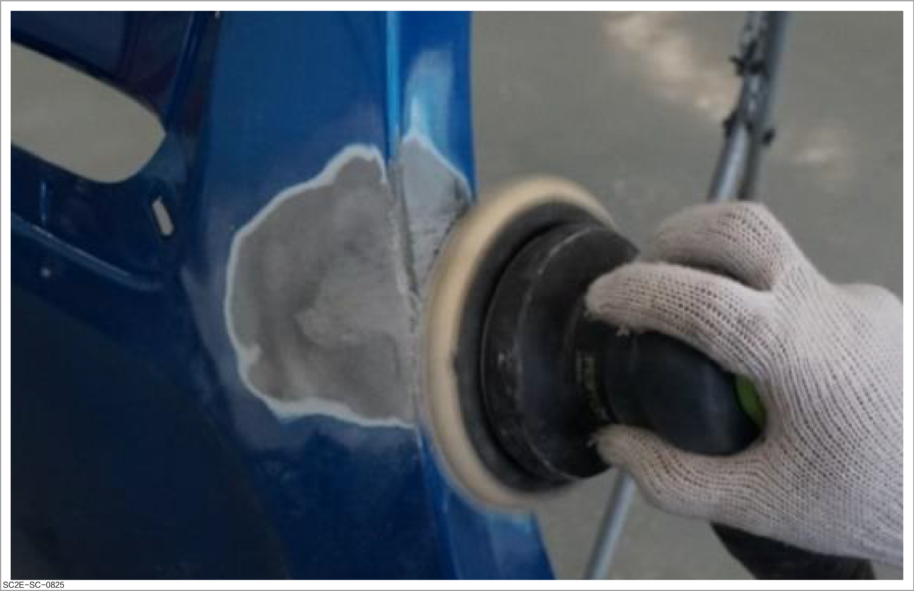
-
Subsequent operations
-
Apply the plastic poly-putty. Refer to Application of plastic poly-putty
-
Apply the intermediate paint. Refer to Spraying of intermediate paint
-
Spray the plastic parts. Refer to Spraying of plastic parts
-
Dry the sprayed paint. Refer to How to dry
-
Perform fine treatment for the sprayed surface. Refer to Performing polishing